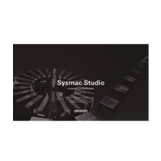

Please purchase a DVD and licenses the first time you purchase the Sysmac Studio. DVDs and licenses are available individually.
Building Automation
Industrial Automation
Power Automation & Safety


Bangladesh Distributor
SYSMAC-SE2[][][]
Automation Software Sysmac Studio

Provides an integrated development environment for NJ/NX/NY-series Controllers. With its intuitive user interface, integrates programming, test and debug of logic, motion, safety and vision sensors and achieves an advanced security function.
about this Product Family
Related Contents
- Automation Systems
- Machine Automation Controllers
- Features
- Lineup
- Specifications
- Dimensions
- Catalog
last update: October 03, 2016
Automation Software
| Product | Specifications | Model | Stand-
ards |
||
|---|---|---|---|---|---|
| Number of
licenses |
Media | ||||
| Sysmac Studio
Standard Edition Ver.1.[][] |
The Sysmac Studio is the software that
provides an integrated environment for setting, programming, debugging and maintenance of machine automation controllers including the NJ/NX-series CPU Units, NY-series Industrial PC, EtherCAT Slave, and the HMI. Sysmac Studio runs on the following OS. Windows 7 (32-bit/64-bit version)/ Windows 8 (32-bit/64-bit version)/ Windows 8.1 (32-bit/64-bit version)/ Windows 10 (32-bit/64-bit version) |
-
(Media only) |
DVD | SYSMAC-SE200D | - |
| 1 license | - | SYSMAC-SE201L | - | ||
| 3 licenses | - | SYSMAC-SE203L | - | ||
| 10 licenses | - | SYSMAC-SE210L | - | ||
| 30 licenses | - | SYSMAC-SE230L | - | ||
| 50 licenses | - | SYSMAC-SE250L | - | ||
| Sysmac Studio
Vision Edition Ver.1.[][] *1 *2 |
Sysmac Studio Vision Edition is a limited
license that provides selected functions required for FQ-M-series and FH-series Vision Sensor settings. |
1 license | - | SYSMAC-VE001L | - |
| Sysmac Studio
Measurement Sensor Edition Ver.1.[][] *2 *3 |
Sysmac Studio Measurement Sensor
Edition is a limited license that provides selected functions required for ZW-series Displacement Sensor settings. |
1 license | - | SYSMAC-ME001L | - |
| 3 licenses | - | SYSMAC-ME003L | - | ||
| Sysmac Studio
NX-I/O Edition Ver.1.[][] *2 *4 |
Sysmac Studio NX-I/O Edition is a limited
license that provides selected functions required for EtherNet/IP Coupler settings. |
1 license | - | SYSMAC-NE001L | - |
| Sysmac Studio
Drive Edition Ver.1.[][] *2 *5 |
Sysmac Studio Drive Edition is a limited
license that provides selected functions required for drive settings. |
1 license | - | SYSMAC-DE001L | - |
| Sysmac Studio
Robot Additional Option *2 |
Sysmac Studio Robot Additional Option
is a license to enable the Vision & Robot integrated simulation. |
1 license | - | SYSMAC-RA401L | - |
Note: Site licenses are available for users who will run Sysmac Studio on multiple computers. Ask your OMRON sales
representative for details.
*1. With the Vision Edition, you can use only the setup functions for FQ-M-series and FH-series Vision Sensors.
*2. This product is a license only. You need the Sysmac Studio Standard Edition DVD media to install it.
*3. With the Measurement Sensor Edition, you can use only the setup functions for ZW-series Displacement Sensors.
*4. With the NX-I/O Edition, you can use only the setup functions for EtherNet/IP Coupler.
*5. With Drive Edition. you can use only the setup functions for 1S, G5-series Servo System.
representative for details.
*1. With the Vision Edition, you can use only the setup functions for FQ-M-series and FH-series Vision Sensors.
*2. This product is a license only. You need the Sysmac Studio Standard Edition DVD media to install it.
*3. With the Measurement Sensor Edition, you can use only the setup functions for ZW-series Displacement Sensors.
*4. With the NX-I/O Edition, you can use only the setup functions for EtherNet/IP Coupler.
*5. With Drive Edition. you can use only the setup functions for 1S, G5-series Servo System.
Components
DVD (SYSMAC-SE200D)
| Components | Details |
|---|---|
| Introduction | An introduction about components, installation/uninstallation, user registration and auto
update of the Sysmac Studio is provided. |
| Setup disk (DVD-ROM) | 1 |
License (SYSMAC-SE2[][]L/VE0[][]L/ME0[][]L/NE0[][]L/DE0[][]L/RA4[][]L)
| Components | Details |
|---|---|
| License agreement | The license agreement gives the usage conditions and warranty for the Sysmac Studio. |
| License card | A model number, version, license number, and number of licenses are described. |
| User registration card | Two cards are contained. One is for users in Japan and the other is for users in other
countries. |
Included Support Software
DVD media of Sysmac Studio includes the following support software.
| Included Support Software | Outline | |
|---|---|---|
| CX-Designer | Ver.3.[] | The CX-Designer is used to create screens for NS-series PTs. *1 |
| CX-Integrator | Ver.2.[] | The CX-Integrator is used to set up FA networks. |
| CX-Protocol | Ver.1.[] | The CX-Protocol is used for protocol macros for Serial Communications Units. |
| Network Configurator | Ver.3.[] | The Network Configurator is used for tag data links on the built-in EtherNet/IP port. |
| SECS/GEM
Configurator *2 |
Ver.1.[] | The SECS/GEM Configurator is used for SECS/GEM settings. |
| Adept Robot IP
Address Setting Tool |
Ver.1.[] | The Adept Robot IP Address Setting Tool is used for setting IP address of Adept Robot. |
| CX-ConfiguratorFDT | Ver.2.[] | The software that sets the IO-Link devices. |
| IODD DTM
Configurator |
Ver.3.[] | The software that adds and deletes IODD files for the IO-Link devices. |
*1. Please use the Sysmac Studio to create the project of the NA Series.
*2. Please purchase the required number of SECS/GEM Configurator licenses.
last update: October 03, 2016